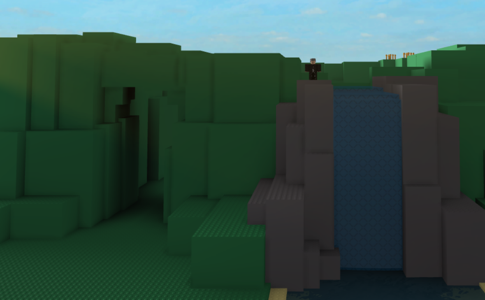

From here you can:
Paradise island is an island with a shore, A nice mountain wall and
a place to live on the inside.
Flax island contains Small trees, Wheat, Berries, Apples, And onions
It also has a cave with coal and sulfur veins
because there is a spawn and it is often visited.
Spawn:Yes
Water:Pond
Rocks and ores:Coal and sulfur veins
Animals:None
Plants:Trees, Big trees, Apples, Berry bushes, Onions, And wheat
Paradise island is great for beginners or established traders
However it doesnt have much building space and there is a spawnpoint, To combat that you
Can settle on the hills
Dont fall in the pond!